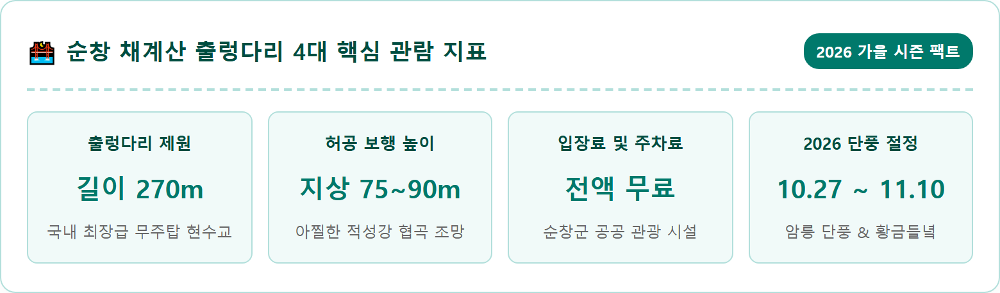
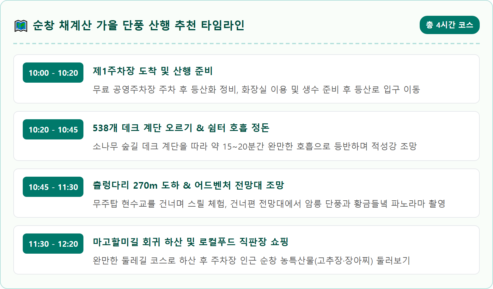
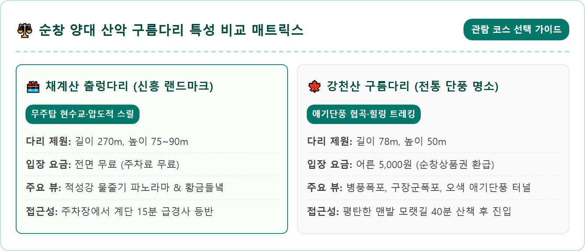
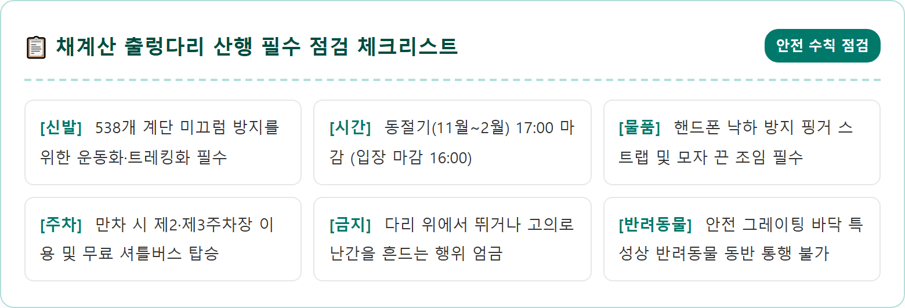
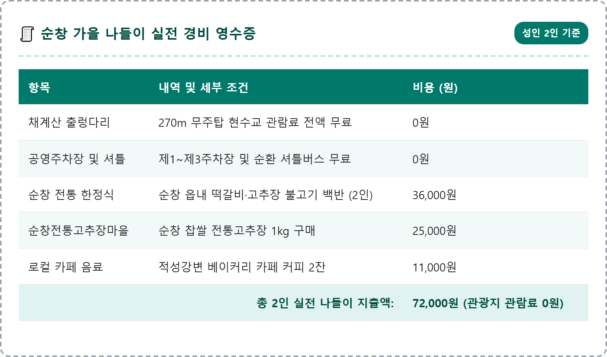
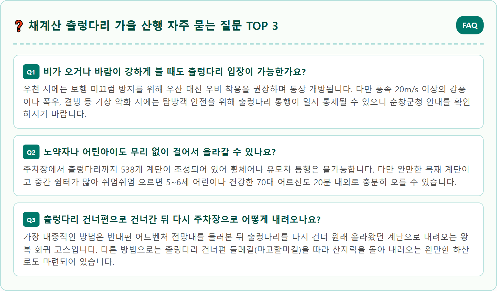

A stunning, photorealistic wide-angle eye-level landscape photograph of the Chaegyesan Suspension Bridge in Sunchang, South Korea, during peak autumn foliage in late October. A magnificent 270-meter pillarless suspension footbridge spans gracefully across a deep mountain gorge between two rocky crags. Below, the winding Jeokseonggang river flows through golden autumn paddy fields, while surrounding mountain slopes are carpeted with vibrant red maple and golden orange foliage. Soft morning sunlight illuminates the red steel suspension bridge cables and dramatic mountain peaks. Clear blue sky, ultra-high resolution 8k photography, serene Korean autumn mountain landscape, shot on full frame camera, 1:1 aspect ratio.





